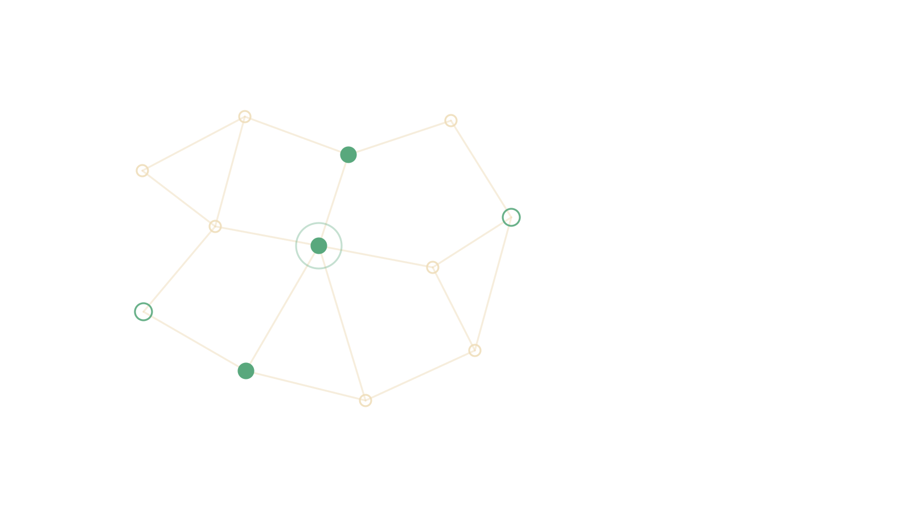
Portada
Universidad de Antioquia · Ingeniería de Sistemas
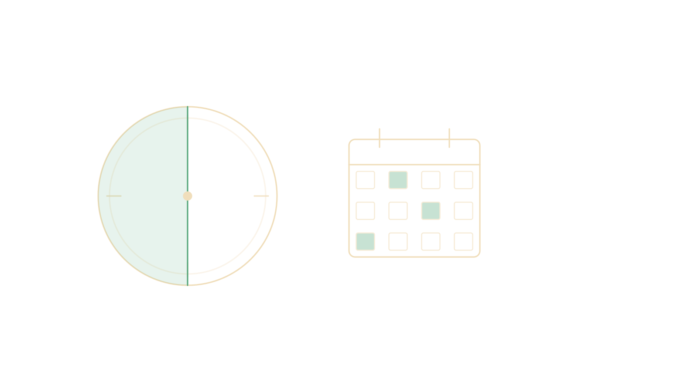
Encuadre
El bloque semanal son 4 horas divididas en dos
Encuadre
| Rubro | Peso |
|---|---|
| Seguimiento semanal (15 entregas, se descartan las 2 más bajas) | 20 % |
| Trabajo 1 — Plan de pruebas y diseño de casos | 25 % |
| Trabajo 2 — Ejecución, métricas, CI y automatización | 25 % |
| Fábrica-Escuela (3 entregables) | 30 % |
Al entregar, cada integrante reporta en privado quién trabajó.
Quien no asista a la sala y no participe en la entrega obtiene 0 esa semana.
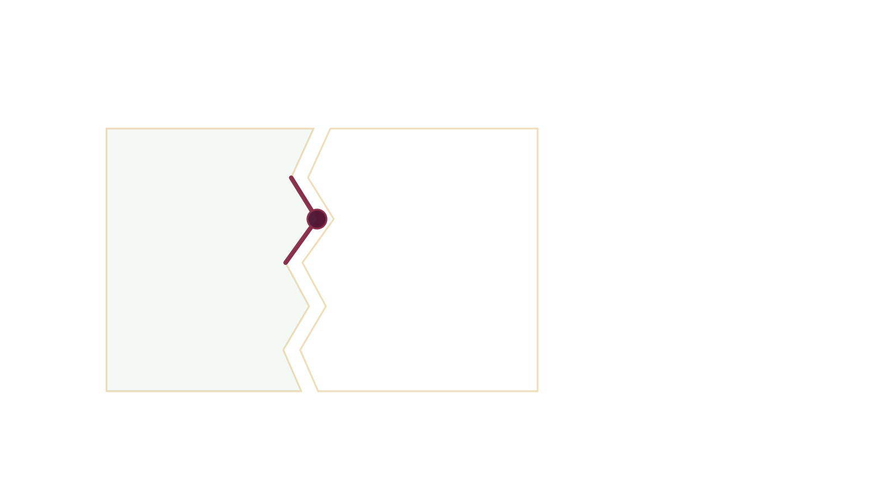
Apertura
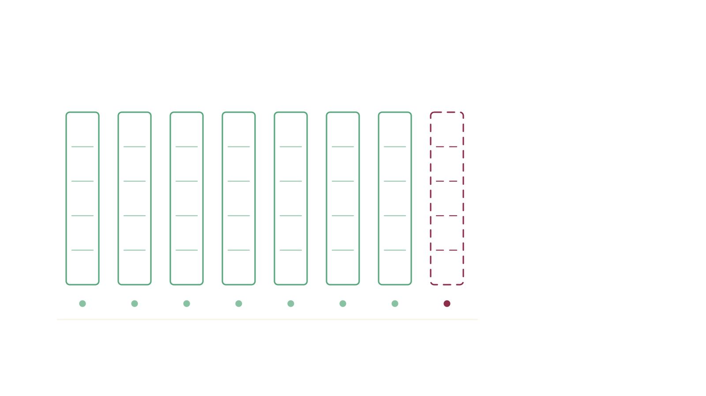
Caso · Ficha técnica
| Empresa | Knight Capital Americas LLC — bróker-dealer, Jersey City, NJ |
|---|---|
| Peso en el mercado | ~10 % de todo el trading de acciones listadas en EE. UU. |
| Sistema implicado | SMARS — router algorítmico de órdenes de alta velocidad |
| Fecha | 1 de agosto de 2012, 9:30–10:15 a. m. |
| Duración | ~45 minutos |
| Pérdida (SEC) | Más de 460 millones de dólares |
| Sanción SEC | 12 millones de dólares, censura y orden de cese |
| Desenlace | 2013: Knight se fusiona con GETCO — deja de existir como empresa independiente |
La cifra de 440 millones que abrió esta sesión es la que Knight Capital comunicó antes de impuestos. La orden de la SEC —la fuente oficial— dice "más de 460 millones". Ambas cifras circulan; cuando cites una, cita también la fuente.
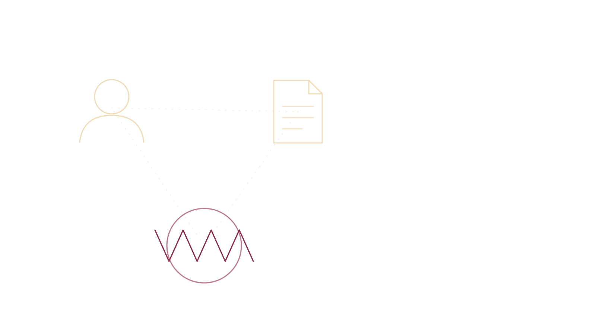
Caso · Contexto técnico
SMARS recibe órdenes padre desde otros componentes de la plataforma y las descompone en órdenes hija que envía al mercado hasta completar la orden padre.
El mecanismo de parada es una función de cantidad acumulada: cuenta cuántas acciones de la orden padre ya se ejecutaron y detiene el envío de hijas al llegar al total.
Ese contador es la pieza que falla en este caso — y no porque tuviera un error de lógica.
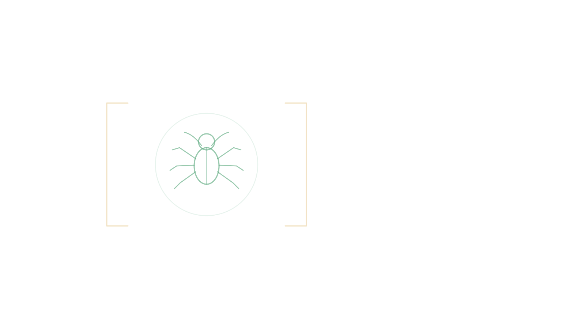
Caso · Anatomía técnica
Ningún ingrediente por sí solo hunde a la empresa. Juntos, sí.
Caso · Cronología
Caso · Punto ciego
Desde las 8:01 a. m. — 89 minutos antes de la apertura — un sistema interno envía correos automáticos con el mensaje "Power Peg disabled". Se enviaron 97 antes de las 9:30.
"Knight no diseñó esos mensajes como alertas de sistema, y el personal de Knight, por lo general, no los revisaba al recibirlos." — Orden de la SEC
Los mensajes existían, llegaban en tiempo real, señalaban la causa exacta — y no eran alertas.
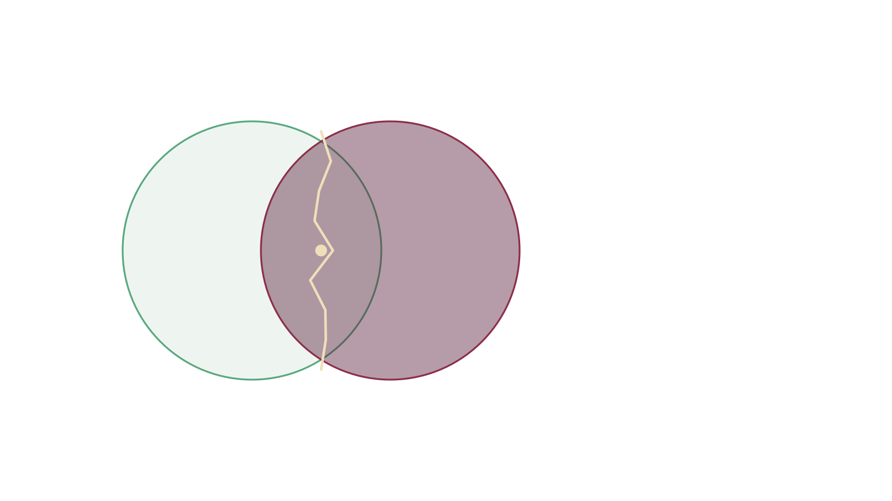
Caso · Punto de giro
Knight no tenía procedimientos de respuesta a incidentes. Con el sistema ya enviando órdenes erróneas, el equipo intentó diagnosticar en producción — y en uno de esos intentos desinstaló el código nuevo de los siete servidores donde sí funcionaba bien.
Resultado: las órdenes entrantes empezaron a activar Power Peg también en esos siete servidores. Un rollback sin diagnóstico multiplicó el daño por ocho.
"Knight necesitaba una guía clara sobre cuándo desconectar del mercado un sistema que está fallando." — Orden de la SEC
Caso
| Control existente | Por qué no funcionó |
|---|---|
| Anti-órdenes erróneas en cliente, OMS y ejecución interna | Estaban antes de SMARS; ninguno después, justo antes de salir al mercado |
| Tope de precio (9,5 % del mejor precio nacional) | No aplicaba a órdenes recibidas antes de la apertura — exactamente las 212 que fallaron |
| Límite de posición de 2 millones USD | No estaba enlazado a ningún control automático: era un número sin consecuencia |
| Monitoreo de posiciones (PMON) | Sin alertas automáticas, y se degradaba justo en los momentos de mayor volumen |
Knight sí tenía controles. El problema no fue su ausencia: fue su ubicación, su acoplamiento y su comportamiento bajo carga.
Transición
| Qué ocurrió | Dónde estuvo |
|---|---|
| Omitir el octavo servidor. Reutilizar un bit ya usado. | En la cabeza de una persona |
| El octavo servidor con Power Peg activable | En el sistema desplegado |
| 4 millones de operaciones erróneas en 45 minutos | En el comportamiento observado |
Estas tres cosas tienen nombres distintos. Confundirlos es el error más común del curso.
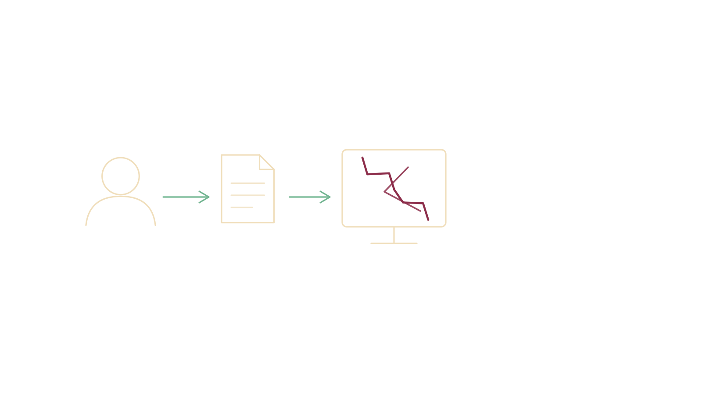
Concepto
Error (error, mistake)
Acción humana que produce un resultado incorrecto. Ocurre en la persona.
Defecto (defect, fault, bug)
La huella que ese error deja en un artefacto: código, documento, configuración.
Falla (failure)
La desviación observable del comportamiento cuando el defecto se ejecuta.
Concepto
| Error | El técnico omite el octavo servidor. Alguien decide reutilizar un bit asociado a código muerto. |
|---|---|
| Defecto | El octavo servidor conserva Power Peg activable por la bandera reutilizada. |
| Falla | 4 millones de operaciones erróneas durante 45 minutos. |
Contraejemplo
def calcular_descuento(monto, tipo_cliente):
if tipo_cliente == "premium":
return monto * 0.20
elif tipo_cliente == "corporativo":
return monto * 1.30 # defecto: recarga en vez de descuento
return monto * 0.05Si ningún cliente corporativo compra, el sistema nunca falla.
El defecto está ahí desde el primer día.
Contraejemplo
¿Puede haber una falla sin defecto en el código?
Hay falla. El defecto está en el documento de requisitos, no en el código.
Interacción
Recordatorio rápido — ¿dónde ocurrió cada cosa?
Clasifica cada situación como error, defecto o falla:
edad > 18 cuando la regla dice edad >= 18.5 minutos · respondan en el chat o en voz alta
Interacción
¿Esta aplicación es de calidad?
(proyectar la pantalla de una app conocida: banca, streaming, o el portal académico)
Respuestas típicas — todas contradictorias entre sí, y todas defendibles:
Nadie está equivocado. Están usando definiciones distintas de calidad sin saberlo.
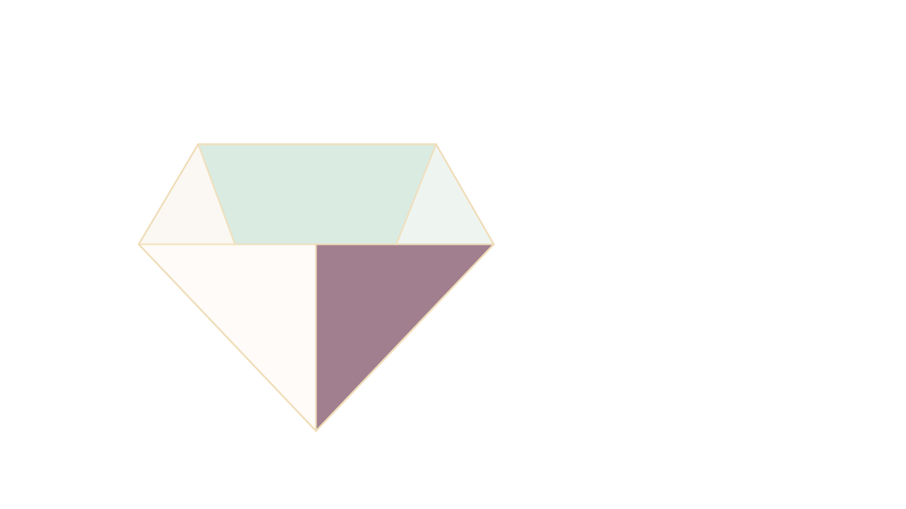
Concepto · Origen
En plena crisis de calidad de la industria estadounidense frente a la japonesa —cuando "calidad" era el tema de moda en gestión y nadie se entendía— Garvin hizo un movimiento distinto: no propuso una sexta definición mejor.
Argumentó que "calidad" no es un concepto ambiguo: son cinco conceptos distintos que comparten una palabra.
Cada uno lo desarrolló una disciplina distinta, en aislamiento, y ninguna estaba equivocada dentro de su propio dominio:
"¿Cuál es la verdadera definición de calidad?" es una pregunta mal planteada. Garvin no la resuelve — la disuelve.
Concepto
| Enfoque | Calidad es... | Lo dirías así |
|---|---|---|
| Trascendente | Excelencia reconocible pero no definible | "Se ve elegante" / "es fea" |
| Basado en el producto | Mayor cantidad de un atributo deseable | "Es más rápida", "tiene más funciones" |
| Basado en el usuario | Adecuación a lo que el usuario necesita | "Es difícil de usar" |
| Basado en la fabricación | Conformidad con la especificación | "Nunca se cae", "cumple lo que promete" |
| Basado en el valor | Rendimiento aceptable a un costo aceptable | "Es buena para lo que cuesta" |
Son las mismas respuestas contradictorias de la diapositiva anterior. Cada una es válida — bajo un enfoque distinto, y sin que quien la dijo supiera cuál estaba usando.
Concepto · Origen
Crosby no era académico: era ingeniero de control de calidad. En los años 60, en el programa de misiles Pershing de Martin Company, lideró un experimento que cambiaría todo: exigir cero defectos no como aspiración, sino como objetivo de proceso — prevenir en vez de inspeccionar después de que el error ya ocurrió.
Después pasó 14 años como vicepresidente de calidad en ITT, una multinacional con decenas de divisiones en todo el mundo. Ahí aprendió algo que marcó su carrera: a los gerentes no los convencía la estadística, los convencía el dinero.
En 1979 publicó "Quality Is Free" ("La calidad es gratis"), y con eso volvió la calidad un tema de la alta dirección — no solo del área de ingeniería.
"Cero defectos" nació en una línea de producción de misiles, muy controlada. Al llevarlo a software y a gestión general se volvió más un principio motivacional que un método estadístico: a diferencia de Deming, Crosby fija el objetivo pero no entrega las herramientas para alcanzarlo.
Sus ideas se condensan en cuatro afirmaciones — la que sigue es la primera.
Concepto
Philip Crosby
Concepto · Origen
Juran nació en Rumania en 1904, emigró de niño a Estados Unidos, y empezó su carrera en el departamento de inspección de Western Electric — la misma planta de Hawthorne donde se documentó por primera vez el "efecto Hawthorne". Ahí aplicó el principio de Pareto a los defectos: pocas causas explican la mayoría de los problemas.
En 1954 viajó a Japón, invitado a enseñarle gestión de calidad a la alta dirección — no a los técnicos. Junto con Deming, es una de las dos personas a las que la industria japonesa señala como origen de su revolución de calidad de posguerra. Treinta años después, esa misma revolución fue la crisis que llevó a Garvin a escribir sus cinco definiciones.
Su aporte central fue correr el criterio de calidad del documento al usuario: no importa qué tan bien esté escrita la especificación si no sirve para lo que la gente necesita.
Su otro legado es la "trilogía de Juran" — planificar, controlar, mejorar — tomada del lenguaje del presupuesto financiero, no de la ingeniería. Es una forma de gestión, no un método estadístico: por eso "adecuación al uso" es más difícil de medir que "conformidad con los requisitos", y la industria del testing históricamente se apoyó más en Crosby.
Esa dificultad para medirlo es justo lo que provoca la tensión con Crosby que viene más adelante.
Concepto
Joseph Juran
Tensión conceptual
Un sistema de matrícula cumple el 100 % de sus requisitos.
Ningún estudiante logra matricularse sin ayuda.
¿Quién tiene razón?
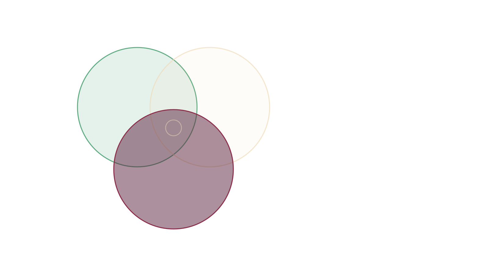
Concepto
| Calidad de... | Se pregunta | Se mide con |
|---|---|---|
| Producto | ¿Cómo es el software construido? | ISO/IEC 25010 |
| Proceso | ¿Cómo se construyó? | ISO/IEC 12207, CMMI |
| Uso | ¿Le sirve a quien lo usa, en su contexto? | ISO/IEC 25010 (calidad en uso) |
Premisa de todo el curso: la calidad del proceso condiciona la del producto.
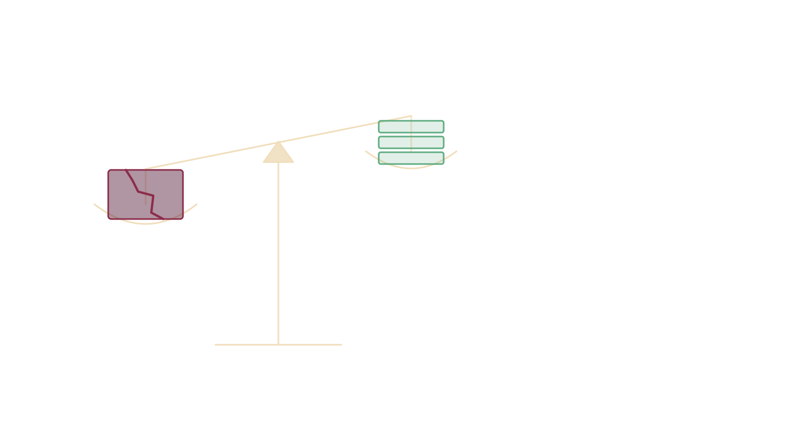
Concepto
Precio de la conformidad — lo que se invierte para que salga bien
Precio de la no-conformidad — lo que cuesta que salga mal
Concepto en disputa
Afirmación clásica: corregir un defecto cuesta más cuanto más tarde se encuentra.
Requisitos → Diseño → Código → Pruebas → Producción
(costo creciente por fase)
Advertencia: los multiplicadores concretos que circulan (1 : 10 : 100 : 1000) no tienen respaldo empírico sólido.
Caso · Antecedente
Diez meses antes, en una prueba de recuperación de desastres, un equipo siguió usando datos de prueba el lunes siguiente, ya en producción. Pérdida: ~7,5 millones de dólares.
La respuesta de Knight fue local: limitar el sistema al horario de mercado, detener cotizaciones tras la primera ejecución, y agregar un ítem a una lista de verificación.
"Knight reaccionó de forma estricta al síntoma, limitando su respuesta a evitar que ese problema puntual se repitiera." — Orden de la SEC
Nadie preguntó si los controles alcanzaban para impedir órdenes erróneas en general. Es el ejemplo de un análisis causal que se detiene en el síntoma.
Cierre de caso
¿En qué momento se pudo detener Knight Capital?
212 órdenes de entrada → 4 millones de ejecuciones de salida. Un factor de amplificación de ~18 900×.
Caso · Perspectiva
La propia SEC razona en modo contrafactual: un procedimiento simple de doble verificación del despliegue podría haber detectado el servidor faltante y evitado todo lo demás.
Existe una crítica seria a ese razonamiento, desde la ingeniería de resiliencia: los contrafactuales describen un mundo que no existió. Después del accidente siempre se identifica la barrera que faltaba; antes, competía con cientos de barreras igual de plausibles.
La pregunta productiva no es "¿qué barrera faltaba?" sino "¿qué hacía que su ausencia pareciera razonable a gente competente?"
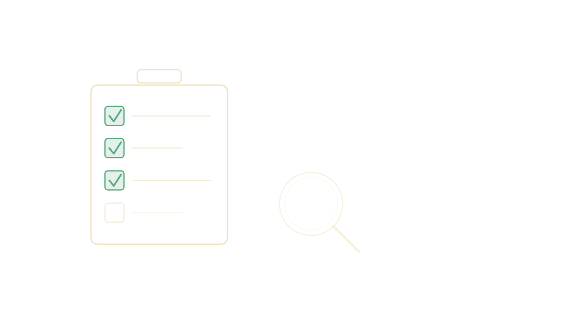
Síntesis
Instrucciones
Cazar defectos — 2 horas, en sala de Zoom asignada
Cada grupo recibe una aplicación (la misma). Deben entregar 6 hallazgos, cada uno con:
La entrega cierra al terminar las dos horas.
Cierre
Antes de la clase de la semana 2, hay que llegar con esto leído:
En la semana 2 arrancan las defensas. Dos o tres grupos elegidos al azar explican el trabajo de hoy. El docente escoge quién responde.